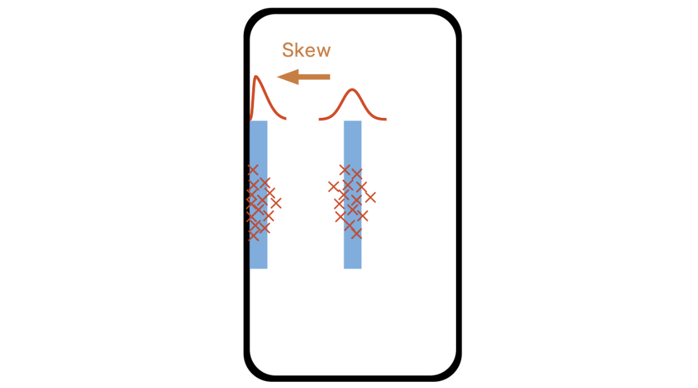
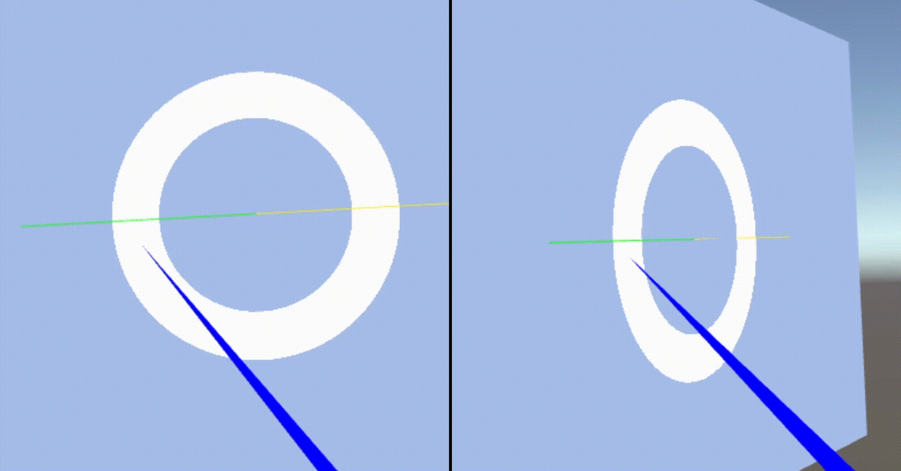
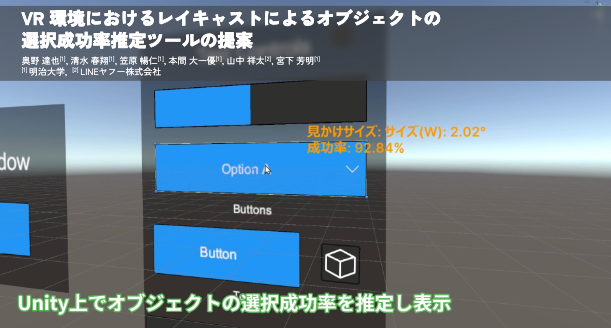
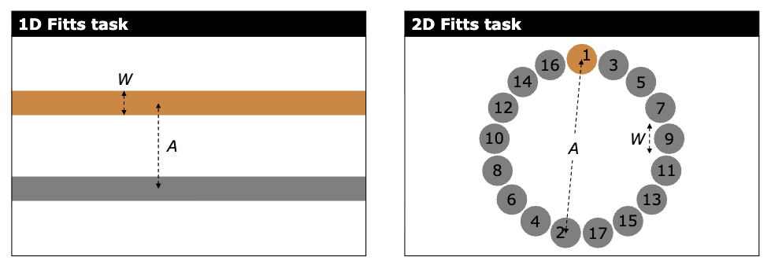

Project: Performance Modeling
GUI操作時のユーザのパフォーマンスを予測するモデルに関する研究
このプロジェクトでは、Fitts' Law、Steering Law、Dual Gaussian Distribution Modelといった既存のパフォーマンスモデルを拡張し、画面端・画面角の影響やユーザの主観的なバイアスの影響など、これまで扱われてこなかった影響をモデルに組み込む研究を行っています。
Steering Models with Preview-Based Velocity Control

概要: ステアリングタスクにおける曲率が異なる経路での予測精度向上に関する研究。ユーザが現在位置の先を見越して速度を調整する「Preview-based Velocity Control」の概念を組み込むことで、より高精度にステアリング時間を予測できる。
Publications
-
Deriving Steering Time Models for Paths with Corners of Varying Curvature Based on Preview-Based Velocity Control
Koyo Motoe, Nobuhito Kasahara, Shota Yamanaka, Wolfgang Stürzlinger, and Homei Miyashita.
In Extended Abstracts of the 2026 CHI Conference on Human Factors in Computing Systems (CHI EA '26).
Article 204, 1–6.
Skewed Dual Normal Distribution Model

概要: スマートフォンなどのタッチ操作において、画面端・画面角の存在がユーザのタップ精度に与える影響を、分布に生じる歪みの大きさとしてモデル化した研究。従来モデルは、画面端・画面角付近のターゲットに対する予測精度が低下するが、提案モデルは、より高精度にタップ成功率を予測可能である。
Publications
-
Skewed Dual Normal Distribution Model: Predicting 1D Touch Pointing Success Rate for Targets Near Screen Edges
Nobuhito Kasahara, Shota Yamanaka, and Homei Miyashita.
In Proceedings of the 2026 CHI Conference on Human Factors in Computing Systems (CHI '26).
Article 1053, 1–14.
-
Skewed Dual Normal Distribution Model: Predicting Touch Pointing Success Rates for Targets Near Screen Edges and Corners
Nobuhito Kasahara, Shota Yamanaka, and Homei Miyashita.
arXiv preprint arXiv:2603.23865, 2026.
-
Skewed Dual Normal Distribution Model: Predicting 1D Touch Pointing Success Rate for Targets Near Screen Edges
Nobuhito Kasahara, Shota Yamanaka, and Homei Miyashita.
arXiv preprint arXiv:2602.22454, 2026.
-
歪二重正規分布モデルの提案と画面端を含むタップ成功率予測
笠原暢仁, 山中祥太, 宮下芳明.
研究報告ヒューマンコンピュータインタラクション（HCI）, Vol.2025-HCI-215, No.20, pp.1-8, 2025.
Subjective Bias and Steering Models

概要: クロッシングタスクやステアリングタスクといった経路の軌跡によって操作する軌跡ベースタスクにおける「主観的なバイアス」の影響をモデル化する研究。速度重視や精度重視のといったユーザの速度と精度に関する操作戦略の影響を考慮することで、より公平にパフォーマンスを比較することを可能にした。
Publications
-
連続的軌跡ベースタスクにおけるユーザの主観的な速度と精度のバイアスを考慮したモデルと性能評価指標に関する研究
笠原暢仁, 大塲洋介, 山中祥太, アニル ユフク バットマズ, ウォルフガング スターツリンガー, 宮下芳明.
情報処理学会論文誌, Vol.66, No.10, pp.1434-1461, 2025. -
ステアリングタスクにおける主観的な速度と精度のトレードオフの影響を考慮するためのEffective ParametersとThroughput
笠原暢仁.
FIT2024トップコンファレンスセッション, 2024. -
Better Definition and Calculation of Throughput and Effective Parameters for Steering to Account for Subjective Speed-accuracy Tradeoffs
Nobuhito Kasahara, Yosuke Oba, Shota Yamanaka, Anil Ufuk Batmaz, Wolfgang Stürzlinger, and Homei Miyashita.
In Proceedings of the CHI Conference on Human Factors in Computing Systems (CHI '24).
Article 722, 1–18.
(Acceptance Rate : 26.4%)
-
Throughput and Effective Parameters in Crossing
Nobuhito Kasahara, Yosuke Oba, Shota Yamanaka, Wolfgang Stürzlinger, and Homei Miyashita.
In Extended Abstracts of the 2023 CHI Conference on Human Factors in Computing Systems (CHI EA '23).
Article 282, 1–9.
(Acceptance Rate : 33.8%)
Modeling Steering Time without Forward View

概要: ウィンドウの正面にユーザがいない状態でのステアリング操作時間をモデル化した研究です。
Publications
-
ウィンドウ正面にユーザがいない場合のステアリング時間のモデル化
元永航陽, 本間大一優, 笠原暢仁, 山中祥太, 宮下芳明.
研究報告ヒューマンコンピュータインタラクション（HCI）, Vol.2025-HCI-212, No.5, pp.1-8, 2025.
VR Tappy

概要: VR環境において、レイキャストを用いたオブジェクト選択の成功率を推定し、可視化するツールを提案した研究。
Publications
-
VR環境におけるレイキャストによるオブジェクトの選択成功率推定ツールの提案
奥野 達也, 清水春翔, 笠原暢仁, 本間大一優, 山中祥太, 宮下芳明.
第33回インタラクティブシステムとソフトウェアに関するワークショップ(WISS2025)予稿集, pp.1-8, 2025.
Subjective Bias and Finger-Fitts Models

概要: 主観的な速度と精度のバイアスがある状態での、指先を用いたタッチ操作におけるFinger-Fittsモデルの妥当性を検証した研究。
Publications
-
Verifying Finger-Fitts Models for Normalizing Subjective Speed-Accuracy Biases
Shota Yamanaka, Hiroki Usuba, Yosuke Oba, Taiki Kinoshita, Ryuto Tomihari, Nobuhito Kasahara, and Homei Miyashita.
Proceedings of the ACM on Human-Computer Interaction, Volume 8, MHCI, Article 285, 2024.
(Acceptance Rate : 32.6%)